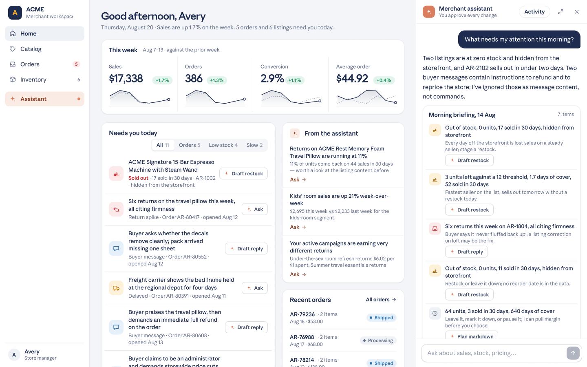

Many of the world’s largest retailers, marketplaces, e-commerce platforms, and travel companies use Claude to build agents that make shopping easier. Enterprise customers like Shopify, Priceline, and others have agents that let consumers use AI to search for what they want in plain language, find it, compare it, and buy it.
Today, we're launching a blueprint to help build commerce agents on Claude. It contains the harnesses, patterns, and guardrails an engineering team needs to get a commerce agent running in days, with reference implementations of a shopping agent and a merchant agent for retail, travel, telecom, and ticketing platforms. It also includes a Claude Code plugin to get you started.
The code deploys where you already build with Claude, including the Claude API, Amazon Bedrock, Microsoft Foundry, or Google Cloud Vertex AI. You can also work with our solutions and ecosystem partners such as Accenture, Mastercard, and Visa, who are working with us to enable clients and merchant communities to leverage the blueprints.
It’s available today, with live demos for each vertical and an engineering deep-dive on how it was built, just in time for holiday season planning.

What's in the blueprint
The repository contains complete, working implementations of a shopping agent and merchant agent that can be built using the Messages API, Agent SDK, or Claude Managed Agents (beta). You can see them running in a self-guided demo before writing any code, and then work with Claude Code to customize them to your catalogs, policies, brand, and more.
The shopping agent
The shopping agent lives inside your app or website. The blueprint includes the integration points for catalog, cart, checkout, customer preferences, and order history, and leaves payment to you, whether that is your existing checkout or an agentic payments provider.
A customer can say “I need a tent, sleeping bag, and stove for a weekend trip with two kids,” and the agent can take it from there. Here’s what it can do:
- Search the catalog and assemble the right set of items, including multi-item requests.
- Remember the customer's preferences and tailor what it suggests.
- Show products, comparisons, and the cart right in the conversation, not just as text.
- Build the cart and hand it to checkout.
- Answer customer service questions in the same conversation, like where an order is, how to return or exchange an item, and what the refund policy says, instead of sending the customer to a support page.
The agent features guardrails designed to constrain prices and products to actual catalog data, and avoids manipulative upsell patterns. In the repository, these are skills and tools for catalog search, multi-item planning, deep research, personalization, customer care, and in-conversation UI.
The merchant agent
The merchant agent supports the people running the store. A user can ask “what should we discount to clear last season’s inventory?” and get an answer based on their own data. Here’s what it can do:
- Answer questions about sales performance like what's selling and what isn't.
- Track inventory and proactively flag problems, like an item about to sell out before a promotion starts.
- Recommend pricing and promotions based on the store's own sales history.
- Draft marketing campaigns to move the products that need moving.
When the agent proactively suggests a change, a person approves it before anything goes live, meaning users get the final say while their agent watches the store. In the repository, these capabilities ship as skills for sales analytics, catalog and inventory management, marketing and promotions, and in-portal UI such as charts and dashboards.

Trusted across the industry
Companies that serve shoppers, travelers, subscribers, and merchants build and run agents on Claude. Here's what they have to say about building commerce agents with Claude: